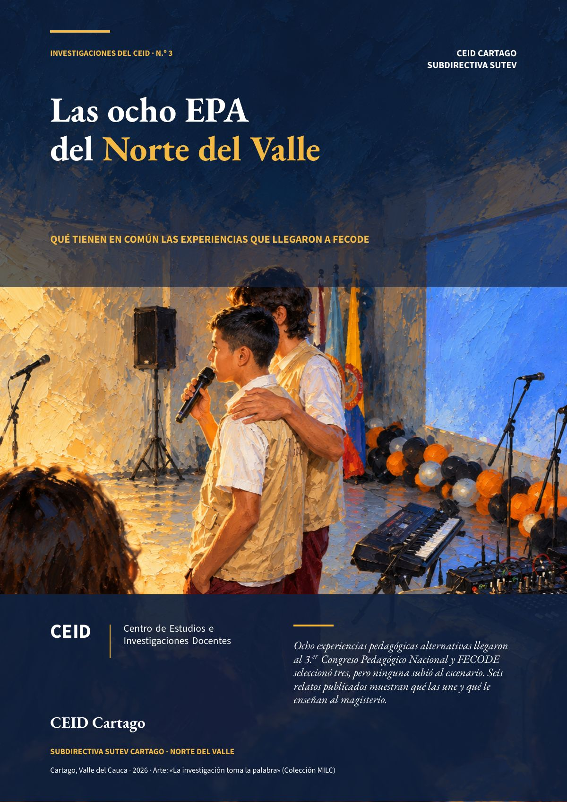

Las ocho EPA del Norte del Valle
Ocho experiencias pedagógicas alternativas llegaron al 3.er Congreso Pedagógico Nacional y FECODE seleccionó tres, pero ninguna subió al escenario. Seis relatos publicados muestran qué las une y qué le enseñan al magisterio.
- 8EPA curadas y sistematizadas por el CEID en 2025
- 3 de 8aprobadas por FECODE a nivel nacional
- 0 de 6relatos que informan sus resultados con cifras

En 2025 el CEID Cartago curó ocho experiencias pedagógicas alternativas (EPA) del Norte del Valle para el 3.er Congreso Pedagógico Nacional. En Cali no pasaron el filtro del grupo coordinador del CEID del SUTEV; el CEID Cartago envió entonces las ocho a Bogotá, al CEID de FECODE, y FECODE aprobó tres: Trazos de Infancia, ECOhilo y ConectaTE. Por razones de tiempo, no alcanzaron a presentarse como ponencias. Esta investigación lee los seis relatos publicados en «Voces que Transforman» para entender qué las une. ConectaTE es del secretario del CEID, que firma esta investigación; el método lo declara.
Fuente: CEID Cartago. Las otras dos son EPA del Norte del Valle que aún no tienen relato publicado.
Lo que tienen en común
En los seis relatos, el estudiante es protagonista, el conocimiento se construye en colectivo y la experiencia deja un producto o un espacio propio. Cinco parten de un problema concreto y cercano, y en cinco los estudiantes indagan. Ninguno informa sus resultados con cifras.
Fuente: codificación del CEID sobre los seis relatos de «Voces que Transforman», fascículo 1 (2026). Cada código lleva su cita y su página.
Lo que propone el CEID
- El Foro Municipal de EPAs, como el escenario que faltó. Que las ocho experiencias curadas presenten allí su trabajo como ponencias (las dos sin relato, si sus autores lo autorizan), con tiempo para conversar entre pares, y que el foro sea anual y abierto a los ocho municipios del Norte del Valle.
- Un acompañamiento que empiece antes de escribir. Desde el registro de cada experiencia, con el curso EPA y PEPA, una lectura entre pares con devolución escrita y la medición de lo que cambió, siempre con cifras agregadas.
- «Voces que Transforman» como serie, con periodicidad fija, comité editorial, ISSN y una ficha técnica común para cada relato.
El documento completo trae una ficha de cada experiencia, ocho gráficas, el método, sus límites y las referencias en APA. Su reconocimiento está en las ocho EPA del Congreso Pedagógico 2025.